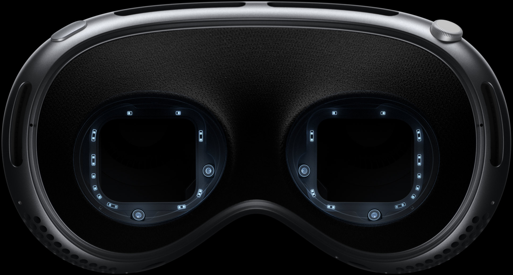

Watch the guided tour
Welcome to the era of spatial computing.
Apple Vision Pro seamlessly blends
digital content with your physical space.
You navigate simply by using your
eyes, hands, and voice.
You’ve never seen everything like this before.
watch the film
Watch the Guided Tour

Design
Designed by Apple.
Apple Vision Pro is the result of decades of experience designing high‑performance, mobile, and wearable devices — culminating in the most ambitious product Apple has ever created. Apple Vision Pro integrates incredibly advanced technology into an elegant, compact form, resulting in an amazing experience every time you put it on.
Font. A singular piece of three-dimensionally formed laminated glass flows into an aluminum alloy frame that curves to wrap around your face.
Light Seal. The Light Seal gently flexes to conform to your face, delivering a precise fit while blocking out stray light.
Head bands. The Solo Knit Band provides cushioning, breathability, and stretch, and a Fit Dial lets you adjust Apple Vision Pro precisely to your head. The Dual Loop Band offers an additional option for a personalized fit.
Power. The external battery supports up to 2 hours of general use and up to 2.5 hours of video playback.1
Sound. Speakers positioned close to your ears deliver rich Spatial Audio while keeping you aware of your surroundings.

A singular piece of three-dimensionally formed laminated glass acts as an optical surface for the cameras and sensors that view the world. It flows seamlessly into a custom aluminum alloy frame that gently curves to wrap around your face while serving as an attachment point for the Light Seal.

Technology
Innovation you can see, hear, and feel.
Pushing boundaries from the inside out. Spatial experiences on Apple Vision Pro are only possible through groundbreaking Apple technology. Displays the size of a postage stamp that deliver more pixels than a 4K TV to each eye. Incredible advances in Spatial Audio. A revolutionary dual‑chip design featuring custom Apple silicon. A sophisticated array of cameras and sensors. All the elements work together to create an unprecedented experience you have to see to believe.

More pixels than a 4K TV. For each eye.
The custom micro‑OLED display system features 23 million pixels, delivering stunning resolution and colors. And a specially designed three‑element lens creates the feeling of a display that’s everywhere you look.
Our most advanced Spatial Audio system ever.
Dual-driver audio pods positioned next to each ear deliver personalized sound while letting you hear what’s around you. Spatial Audio makes sounds feel like they’re coming from your surroundings. Audio ray tracing analyzes your room’s acoustic properties to adapt and match sound to your space. And if you want to use headphones with Apple Vision Pro, AirPods Pro (2nd generation) with USB‑C offer the perfect experience, featuring Lossless Audio with ultra-low latency enabled by the H2 chip in both devices.
Responsive, precision eye tracking.
A high‑performance eye‑tracking system of LEDs and infrared cameras projects invisible light patterns onto each eye. This advanced system provides ultraprecise input without your needing to hold any controllers, so you can accurately select elements just by looking at them.

A sophisticated sensor array.
A pair of high-resolution cameras transmit over one billion pixels per second to the displays so you can see the world around you clearly. The system also helps deliver precise head and hand tracking and real‑time 3D mapping, all while understanding your hand gestures from a wide range of positions.

Revolutionary dual‑chip performance.
A unique dual‑chip design enables the spatial experiences on Apple Vision Pro. The powerful M2 chip simultaneously runs visionOS, executes advanced computer vision algorithms, and delivers stunning graphics, all with incredible efficiency. And the brand-new R1 chip is specifically dedicated to process input from the cameras, sensors, and microphones, streaming images to the displays within 12 milliseconds — for a virtually lag-free, real-time view of the world.
Privacy and Security
When it comes to privacy, we don’t blink.
Privacy and security built in. Like every Apple product and service, Apple Vision Pro was designed to help protect your privacy and keep you in control of your data. It builds on the foundation of existing Apple privacy and security features with new technologies like Optic ID, a secure authentication system that uses the uniqueness of your iris.
Use AR to view Apple Vision Pro.
Open this page using Safari on your iPhone or iPad.

An all‑new platform. An all‑new world for developers.
The possibilities for what developers can dream up and build for Apple Vision Pro are endless. And with familiar tools and frameworks like Xcode, SwiftUI, RealityKit, and ARKit, as well as support for Unity and the new 3D-content preparation app Reality Composer Pro, developers have everything they need to create amazing spatial experiences.
Learn more about developing for Apple Vision Pro1. Testing conducted by Apple in November 2023 using preproduction Apple Vision Pro units and software. Testing consisted of full battery discharge while performing each of the following tasks: video playback, internet browsing, spatial video capture, and FaceTime. Video playback tested in conjunction with an Environment, using 2D movie content purchased from the Apple TV app. Internet browsing tested using 20 popular websites. FaceTime tested between two Apple Vision Pro units with Personas enabled. Tested with Wi-Fi associated to a network. Battery life depends on device settings, usage, network, environmental conditions, and many other factors. Battery tests are conducted using specific Apple Vision Pro units; actual results may vary.
2. Valid prescription required. Not all prescriptions are supported. Vision correction accessories are sold separately.
© 2023 TAKE-TWO INTERACTIVE SOFTWARE INC. All Rights Reserved.
© 2023 NBA Properties, Inc. All Rights Reserved. Officially Licensed Product of the National Basketball Association.
A subscription may be required for some services. Not all content may be available in all areas.
Disney+ subscription required.
Everything Everywhere All At Once © 2022 A24 Distribution, LLC. All rights reserved.
Avatar: The Way of Water © 2022 20th Century Studios and TSG Entertainment Finance LLC.
Users must be 13 years or older.
Available in the U.S. on apple.com, in the Apple Store app, and at Apple Stores.
Store
mac
i pad
i phone
watch
vision
airpods
tv & home
airtag
Accessories
Gift Cards
Wallet
Apple Card
Apple Pay
Apple Cash
Manage Your Apple ID
Apple Store Account
iCloud.com
Apple One
Apple TV+
Apple Music
Apple Arcade
Apple Fitness+
Apple News+
Apple Podcasts
Apple Books
App Store
Find a Store
Genius Bar
Today at Apple
Apple Camp
Apple Store App
Certified Refurbished
Apple Trade In
Financing
Carrier Deals at Apple
Order Status
Shopping Help
Apple and Business
Shop for Business
Apple and Education
Shop for K-12
Shop for College
Apple in Healthcare
Health on Apple Watch
Health Records on iPhone
Shop for Government
Shop for Veterans and Military
Accessibility
Education
Environment
Inclusion and Diversity
Privacy
Racial Equity and Justice
Supplier Responsibility
Newsroom
Apple Leadership
Career Opportunities
Investors
Ethics & Compliance
Events
Contact Apple